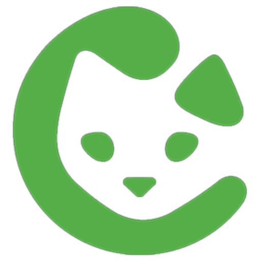

Remote access to your Bisq 2 node, from your pocket.
Bisq Connect is a companion app that lets you monitor and manage your Bisq 2 desktop node from your iPhone. Stay connected to the Bisq peer-to-peer network on the go — check market data, receive push notifications for important events, and communicate with peers through Bisq's private messaging system.
Bisq Connect is distributed through Apple TestFlight, Apple's official platform for beta apps. TestFlight is free, safe, and used by millions of iOS users to access apps before they hit the App Store.
For a step-by-step setup guide, visit the Bisq Connect Wiki Tutorial.
Bisq Connect and Bisq Easy Node are available for Android. Download the latest APK from GitHub Releases.